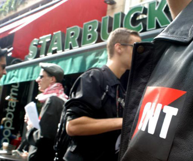

Submitted on Wed, 10/25/2006 - 4:03am
 Over forty people squeezed into a tiny room at this weekend's London Anarchist Bookfair to sow the seeds of a network of anti-authoritarian left education workers. Members of the IWW, Solidarity Federation and Anarchist Federation were all present, along with a large number of unattached workers and students from education institutions all over the UK.
Over forty people squeezed into a tiny room at this weekend's London Anarchist Bookfair to sow the seeds of a network of anti-authoritarian left education workers. Members of the IWW, Solidarity Federation and Anarchist Federation were all present, along with a large number of unattached workers and students from education institutions all over the UK.
The meeting discussed pressing issues in the education sector, including privatisation, job cuts, pay cuts and casualisation, and a productive debate ensued over how we can form a strong network to combat these problems in our individual workplaces and on regional and national levels. The answers were encouraging, alluding to principles and practices of democracy, industrial organising, direct action, militancy and disrespect for the business unions that the IWW has used for the last 101 years.
Submitted on Tue, 10/17/2006 - 10:24pm
The Nation - Tuesday Oct 17, 5:37 PM ET
 The Nation -- Yesterday, more than 200 Wal-Mart workers held a demonstration in front of a Wal-Mart store in Hialeah Gardens, Florida. In the first significant protest ever organized by Wal-Mart employees in the United States, workers objected to managers cutting their hours, and to the company's insistence on employees' "open availability," as well as to a new, more stringent attendance policy.
The Nation -- Yesterday, more than 200 Wal-Mart workers held a demonstration in front of a Wal-Mart store in Hialeah Gardens, Florida. In the first significant protest ever organized by Wal-Mart employees in the United States, workers objected to managers cutting their hours, and to the company's insistence on employees' "open availability," as well as to a new, more stringent attendance policy.
It's courageous of these workers, who are part of a Florida group called "Associates at Wal-Mart," to speak out publicly and demand better treatment. Let's hope their protest is a turning point in the fight for workers' rights at Wal-Mart, and that more workers will be emboldened by the Florida workers' example and begin to organize. Too much of the debate over Wal-Mart takes place without the perspective of the true experts -- the workers themselves.
Speaking of retail workers, the IWW's Starbucks campaign -- which I've mentioned on this blog before -- is growing, and having some encouraging effects. Workers have organized in New York City, and, this summer, Chicago. Last week, the company raised its Chicago workers' wages, increasing starting pay by thirty cents (to $7.80) and promising that if an employee gets a favorable performance review, her pay will go up to $8.58 after six months. New York City workers will make $9.63 an hour after six months on the job (and a favorable review), which means that the IWW campaign will have raised many employees' wages by nearly 25% in two and a half years.
Submitted on Tue, 10/17/2006 - 10:11pm
Published On Tuesday, October 17, 2006 2:26 AM - By VIRGINIA A. FISHER and NICHOLAS K. TABOR, Harvard Crimson Staff Writers.
Disclaimer - Contrary to the authors' remarks, the IWW is not an "anarcho-syndicalist" organization. It is in fact, a revolutionary industrial union.
You may soon be able to get a shot of “anarcho-syndicalism” with your mocha Frappuccino, if the Cambridge City Council has its way.
In its meeting last night, the council passed a resolution supporting the right of Starbucks employees to organize under the aegis of the Industrial Workers of the World (IWW), or "Wobblies," a union made famous in the early 20th century for a brand of radical socialism known as “anarcho-syndicalism.” The IWW advocates “aboliton of the wage system” on its website.
Submitted on Thu, 10/12/2006 - 5:58pm
Wage Increase a Welcome Step But Flaws Abound
New York, NY- After a summer spent highlighting the poverty wage at the world's largest coffee chain and expanding into the Chicago market, the IWW Starbucks Workers Union [www.StarbucksUnion.org] has won a wage increase from the company. The raise will benefit Starbucks employees in New York City, Chicago, and around the country.
In Chicago, starting pay for baristas has increased from $7.50 per hour to $7.80. After six months, Chicago baristas will make $8.58 per hour if they receive a favorable performance review. In New York City, baristas will make $9.63 per hour after six months on the job and a favorable performance review. Senior baristas will receive only a ten-cent raise to discourage long-term employment at Starbucks.
Submitted on Thu, 10/12/2006 - 5:45pm
Picket lines are appearing at Starbucks outlets around the world, as word spreads of the coffee giant’s firing of three IWW members for union activity between July 11 and August 5. Workers were illegally fired on pretexts ranging from insubordination to undermining employee morale as Starbucks grows ever more desperate to crush the union’s growing support.
The German FAU union wrote Starbucks August 19 to protest the firings of Charles Fostrom, Evan Winterscheidt, Daniel Gross and Joe Agnis (a union supporter fired earlier), and warning of actions at Starbucks outlets across Germany if they were not reinstated. In Vienna, the Allegmeines Syndikat Wien has leafleted all Starbucks outlets in that city, alerting customers to the company’s vicious union-busting.